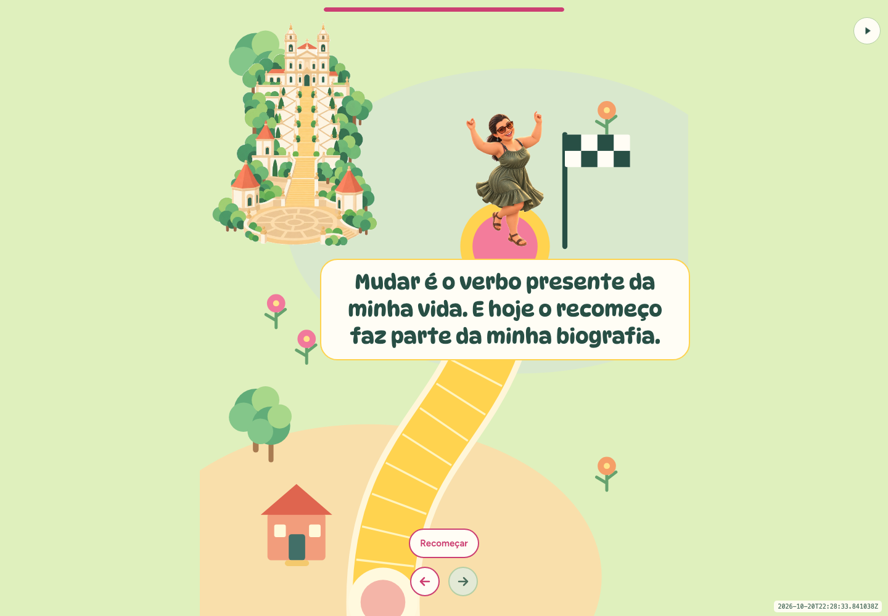
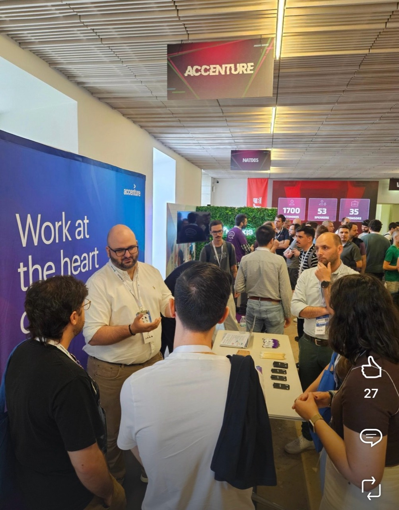
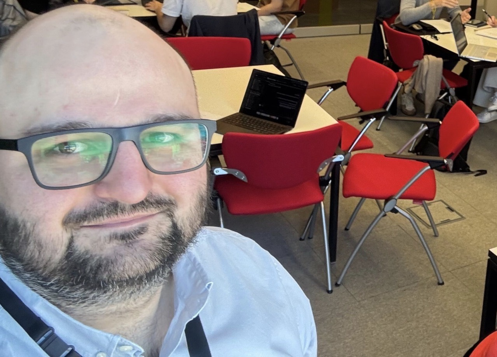
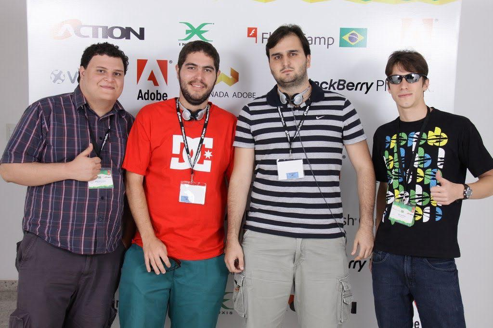
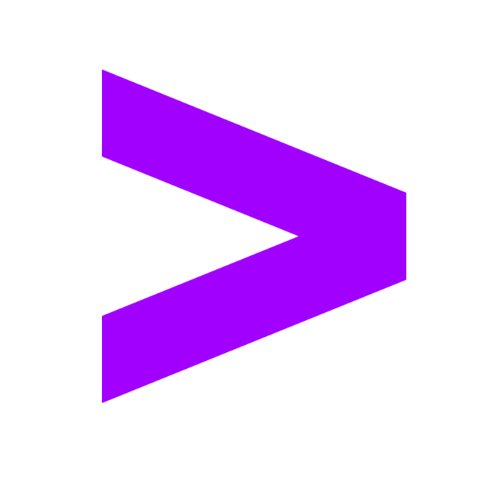
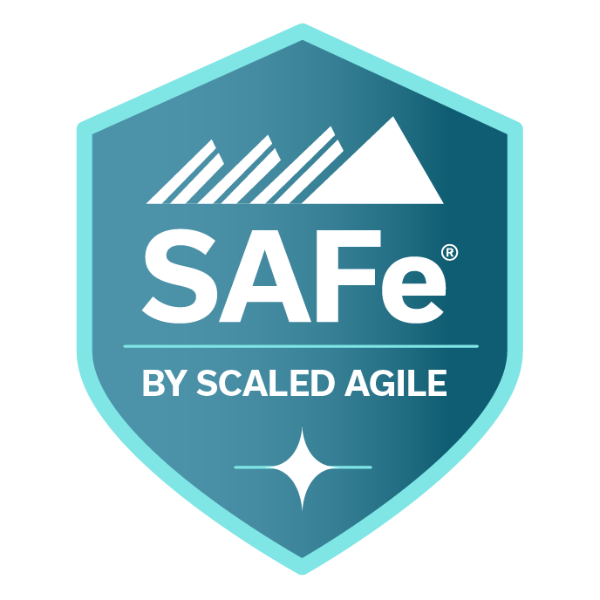
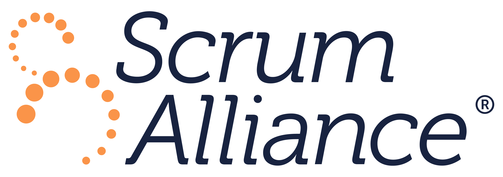
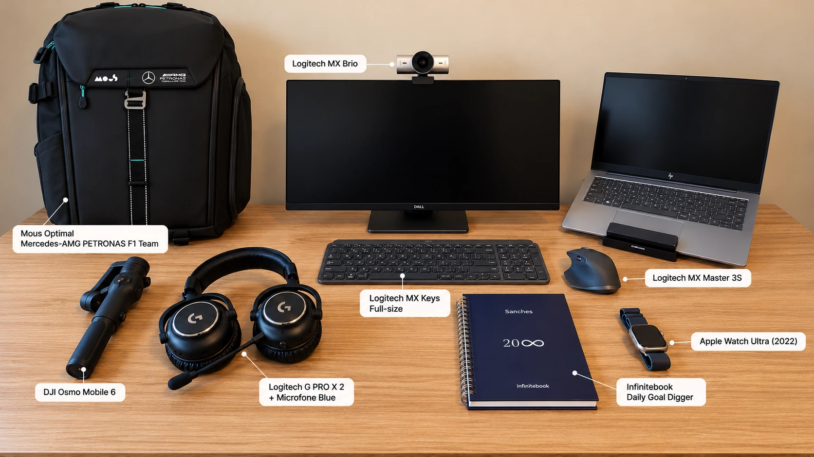

Jogo da Vida - Magnólia
Un juego de tablero interactivo con historias ilustradas y preguntas para reflexionar, que se explora al ritmo de cada jugador.
01 / PERFIL
Gerente de Tecnología y Arquitectura de Soluciones, con más de 17 años liderando equipos, resolviendo desafíos tecnológicos complejos y estabilizando programas de misión crítica. Dirige un área de DevOps con más de 60 profesionales y ofrece liderazgo técnico transversal a más de 20 arquitectos de distintas áreas.
Responsable de una transformación de 7 millones de euros en el sector público europeo; contribuyó a conseguir 3,5 millones de euros en contratos empresariales. Combina resolución práctica de problemas, asesoramiento de confianza al cliente y adopción de IA lista para producción para ofrecer resultados duraderos.
02 / EXPERIENCIA
TRANSFORMACIÓN DEL SECTOR PÚBLICO EUROPEO
Modernización de siete aplicaciones de pesca, control marítimo y gestión de cuotas en AWS, con responsabilidad sobre la entrega, la calidad del servicio y las relaciones con el cliente.
PREVENTA ESTRATÉGICA Y ALIANZA AWS
Diseño de soluciones empresariales, propuestas técnicas e iniciativas conjuntas con AWS para los clientes.
PLATAFORMA DE PERSONAL Y PORTAFOLIO
Integración de datos de personas y proyectos en una plataforma empresarial segura para planificar la capacidad y apoyar decisiones sobre el portafolio.
INGENIERÍA Y LIDERAZGO TÉCNICO
Ingeniería práctica, liderazgo de equipos y arquitectura en productos digitales, integración empresarial, modernización en la nube y programas de transformación.
Proyectos seleccionados, con algunas colaboraciones en paralelo.
03 / PORTFOLIO

Un juego de tablero interactivo con historias ilustradas y preguntas para reflexionar, que se explora al ritmo de cada jugador.
04 / VIVENCIAS
01 / IA E INGENIERÍA
02 / SEGURIDAD Y LIDERAZGO
03 / ENTREGA Y EXPECTATIVAS
04 / EQUIPO Y PROPÓSITO
05 / COMUNIDAD Y SELECCIÓN
06 / CRISIS Y LIDERAZGO
07 / MENTORÍA Y CRECIMIENTO
05 / MENTALIDAD
Desliza o desplázate para conocer mi forma de pensar.
Son frases, pensamientos y reflexiones que he encontrado en libros, películas, series y música, y que he escuchado de líderes y compañeros a lo largo de mi carrera. Se han quedado conmigo porque expresan lo que creo y ayudan a definir quién soy, tanto en la vida como en el trabajo.
En inglés, la idea es:
Suelo hacer esta pregunta al empezar el día. Espero que las cosas salgan bien y quiero que estemos preparados si no es así. Pensar con antelación nos da confianza para afrontar lo inesperado y seguir adelante.
En inglés, la idea es:
Los desafíos me impulsan a aprender, adaptarme y mejorar. Quedarme en mi zona de confort no me lleva más lejos.
Con la idea de hacer que las cosas sucedan:
Escuché esta palabra de un gran líder con el que trabajé. Une planificación y acción: planificar lo suficiente para avanzar y, después, ejecutar. Cuando la planificación se convierte en una fase independiente, todo puede ralentizarse y, a veces, la acción nunca llega.
En inglés, la idea es:
Por mucho cuidado que pongamos al planificar, algo se saldrá del plan. No podemos controlarlo todo. Aceptarlo me ayuda a tomarme los cambios con calma y a mantenerme abierto a lo inesperado.

Lo digo para dar energía al equipo y centrarnos en nuestro propósito y nuestra misión. Los atletas entrenan para el día del partido, el momento de poner en práctica esa preparación. Nos recuerda que debemos llegar preparados, concentrados y comprometidos.

En inglés, la idea es:
Prefiero entregar algo que las personas puedan probar, recibir comentarios pronto y mejorarlo. Puedo seguir puliéndolo durante más tiempo y aun así encontrar cosas que cambiar.
Una vez oí a un líder decir: “Cuanto más tardas en entregar algo, mayores son las expectativas”.
06 / CONTRIBUCIONES
Desliza o desplázate para explorar charlas y eventos.

Representando a Accenture en JNation 2026, en Coimbra, conectando con la comunidad tecnológica y compartiendo nuestro trabajo en transformación de negocios en Portugal y en los mercados internacionales.
Ver foto (se abre en una pestaña nueva)
Un hackathon de IA celebrado simultáneamente en Lisboa, Braga y Coimbra, que reunió a más de 40 estudiantes universitarios y colegas de Accenture para explorar casos de uso, colaborar y desarrollar nuevas ideas.
Ver foto (se abre en una pestaña nueva)Mi participación en la segunda masterclass de Cubo for Devs, centrada en el camino hacia el liderazgo técnico.
Ver en YouTube (se abre en una pestaña nueva)
Representando a Ogilvy en FlashCamp 2010, el mayor evento de la comunidad Adobe en Brasil.
07 / CERTIFICACIONES
Desliza o desplázate para explorar las 25 credenciales.
Deel
Reconocimiento al liderazgo de equipos globales, la colaboración multicultural, la estrategia en distintos mercados y los sistemas que apoyan a los equipos distribuidos.
Emitida

Accenture
Reconocimiento avanzado en arquitectura que abarca el liderazgo técnico en proyectos complejos, las decisiones tecnológicas con clientes, la gobernanza de arquitectura y el intercambio de conocimientos profesionales.
Emitida
Amazon Web Services (AWS)
Diseño de soluciones en AWS que equilibran resiliencia, seguridad, rendimiento y coste mediante principios consolidados de arquitectura en la nube.
Emitida
Vencimiento:
Accenture
Planificación de soluciones en la nube que integra arquitectura, casos de negocio, estructuración comercial de ofertas, estimaciones de costos y precios.
Emitida
Accenture
Certificación en gestión de entregas que abarca gobernanza, contratos, gestión financiera y calidad, con énfasis en las expectativas del cliente y el valor de negocio.
Emitida
Amazon Web Services (AWS)
Desarrollo, pruebas y despliegue de aplicaciones AWS, con flujos de entrega continua y resolución de problemas durante todo el ciclo de vida de la aplicación.
Emitida
Vencimiento:
Accenture
Certificación en arquitectura que abarca el diseño de soluciones, la gobernanza, el liderazgo de equipos tecnológicos y la colaboración con arquitectos del cliente durante la entrega.
Emitida
Accenture
Aprendizaje práctico de IA agéntica que combina conceptos fundamentales y talleres para aplicar agentes de IA a retos empresariales y flujos de trabajo.
Emitida
Amazon Web Services (AWS)
Fundamentos de IA, aprendizaje automático e IA generativa, y su uso en servicios de AWS y escenarios empresariales.
Emitida
Vencimiento:
Amazon Web Services (AWS)
Revisión de arquitecturas en la nube con AWS Well-Architected Framework y Tool para identificar riesgos y orientar mejoras.
Emitida

SAFe by Scaled Agile, Inc.
Liderazgo Lean-Agile a escala empresarial, que abarca los principios de SAFe, la coordinación de entregas mediante Agile Release Trains y la gestión de portafolios con presupuestos Lean-Agile.
Emitida
Vencimiento:

Scrum Alliance
Fundamentos de Scrum para apoyar a equipos eficaces: roles, eventos y artefactos, facilitación, coaching y eliminación de obstáculos para avanzar.
Emitida
Vencimiento:
Google Cloud
Fundamentos de la nube y valor empresarial de Google Cloud, que abarcan transformación digital, datos, modernización de la infraestructura, seguridad y operaciones.
Emitida
Vencimiento:
Amazon Web Services (AWS)
Fundamentos de computación en la nube, principales servicios de AWS y terminología común para hablar de soluciones en la nube con equipos técnicos y de negocio.
Emitida
Vencimiento:
Accenture
Credencial de desarrollo Node.js de la Cloud Native College de Accenture, un programa centrado en la ingeniería de software cloud-native.
Emitida
Google Cloud Skills Boost for Partners
Patrones de diseño para soluciones fiables en Google Cloud, que equilibran los requisitos empresariales con la disponibilidad, la seguridad, el rendimiento y el coste.
Emitida
Google Cloud Skills Boost for Partners
Conexión y escalado de la infraestructura de Google Cloud mediante balanceo de carga, escalado automático, despliegues automatizados y servicios gestionados, con ejercicios prácticos de configuración.
Emitida
Google Cloud Skills Boost for Partners
Estrategias para trasladar cargas de trabajo a Google Cloud, con máquinas virtuales, redes, gestión de acceso y planificación de migraciones mediante Migrate for Compute Engine.
Emitida
Google Cloud Skills Boost for Partners
Gestión de infraestructura de Google Cloud mediante controles de acceso, cifrado, monitorización de recursos, cuotas y facturación, con especial atención a Compute Engine.
Emitida
Google Cloud Skills Boost for Partners
Introducción a los contenedores y Kubernetes, que abarca la arquitectura de GKE, las operaciones básicas y la ejecución de aplicaciones en contenedores en Google Cloud.
Emitida
Google Cloud Skills Boost for Partners
Diseño e implementación de infraestructura de Compute Engine, con máquinas virtuales, redes VPC, rutas y reglas de firewall gestionadas mediante herramientas de Google Cloud.
Emitida
Google Cloud Skills Boost for Partners
Introducción a los servicios de computación y almacenamiento de Google Cloud, con fundamentos prácticos de conceptos de nube, gestión de recursos y políticas.
Emitida
Accenture
Reconocimiento por promover prácticas de trabajo seguras, apoyar la concienciación de los colegas y demostrar buenas prácticas de seguridad de la información.
Emitida
Accenture
Reconocimiento por los conocimientos de seguridad de la información, por liderar con el ejemplo y por ayudar a los compañeros a adoptar prácticas de trabajo seguras.
Emitida
Accenture
Reconocimiento dentro del programa Information Security Advocate de Accenture, que promueve la concienciación sobre seguridad y la adopción de prácticas de trabajo más seguras en el día a día.
Emitida
Vencimiento:
08 / SETUP Y PRODUCTIVIDAD

01 / SETUP Y GADGETS
02 / HERRAMIENTAS Y APPS
03 / RUTINA DE TRABAJO
04 / FLUJOS DE TRABAJO Y AGENTES DE IA
09 / SIGAMOS CONVERSANDO
Espero que te haya gustado lo que has visto. Tomemos un café virtual: me encantará contarte un poco más.
Tomemos un café virtual en LinkedIn (se abre en una pestaña nueva)